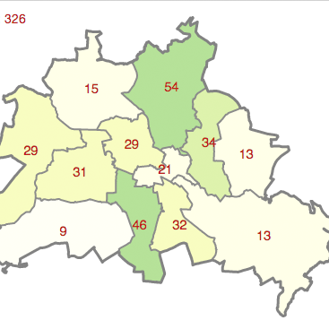
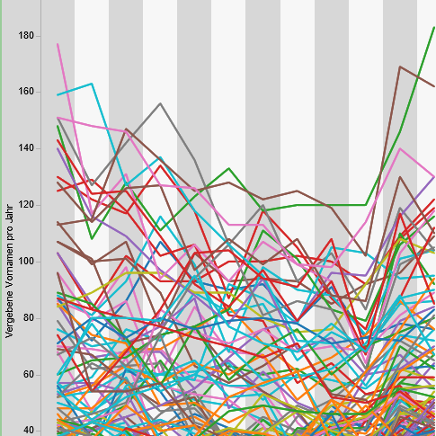
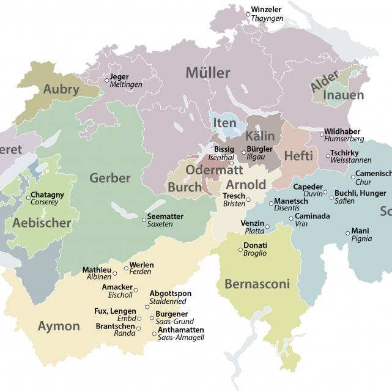

Open Data DACH-Map
Beispiele
Die offenen Daten über Vornamen werden bereits verwendet. Hier eine Beispiele:
Baby benamsen
von Thomas Tursics
- 
Berliner Vornamen
von Knud Möller
- 
Florian und Jessica, Muhammed und Leonie: Vornamen in Wien
von Florian Gossy
rate my name
von Benjamin Grabner
Statistik Niederösterreich
von Benjamin Grabner
Les prénoms les plus portés
von Ville d'Issy-les-Moulineaux
Growing Names
von Marlo Limacher
- 
Alles Müller
von Tages-Anzeiger, Schweiz
Die beliebtesten Vornamen in Hameln
von Dewezet
Wettbewerbe
Aktuell laufen Wettbewerbe rund um Open Data.

Wo gibt es Open Data?
Wo im deutschsprachigen Raum gibt es Open Data Portale? Und bieten sie auch Vornamen-Daten neugeborener Kinder an?Diese Karte zeigt den aktuellen Stand in Sachen Open Data und Vornamen in Deutschland, Österreich und der Schweiz an.
Habe ich ein Datenportal übersehen? Sag es mir:
© GeoBasis-DE / BKG 2015
Thomas Tursics • Frankfurter Allee 172 • 10365 Berlin
Einen kurzen Moment noch...